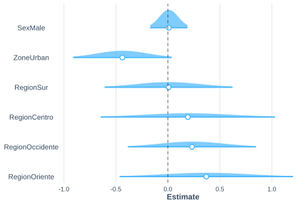
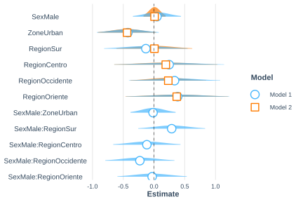
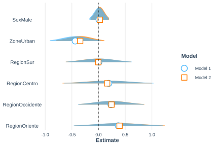

7.5 Modelo de regresión logística
El modelo de regresión logística es apropiado cuando la variable respuesta es dicotómica. La función de enlace es el logit:
\[ g(\pi(x)) = \ln\left(\frac{\pi(x)}{1-\pi(x)}\right) = B_0 + B_1 x_1 + \cdots + B_p x_p \]
La probabilidad estimada es:
\[ \hat{\pi}(\boldsymbol{x}) = \frac{\exp(\boldsymbol{X\hat{B}})}{1 + \exp(\boldsymbol{X\hat{B}})} \]
La varianza de los parámetros estimados se obtiene mediante:
\[ \text{var}(\hat{\boldsymbol{B}}) = \boldsymbol{J}^{-1} \text{var}(S(\hat{\boldsymbol{B}})) \boldsymbol{J}^{-1} \]
donde \(S(\boldsymbol{B}) = \sum_h \sum_a \sum_i w_{hai} \boldsymbol{D}_{hai}^t [\pi_{hai}(1-\pi_{hai})]^{-1} (y_{hai} - \pi_{hai}) = 0\) es la ecuación de estimación bajo diseño complejo.
Para la prueba de significancia de los parámetros se utiliza la razón de verosimilitud entre el modelo completo y el modelo reducido:
\[ G = -2 \ln\left[\frac{L(\hat{\boldsymbol{\beta}}_{MLE})_{reduced}}{L(\hat{\boldsymbol{\beta}}_{MLE})_{full}}\right] \]
Los intervalos de confianza se construyen aplicando la función exponencial a los parámetros estimados en escala logit:
\[ CI(\psi) = \exp\left(\hat{B}_j \pm t_{df,\, 1-\alpha/2} \cdot se(\hat{B}_j)\right) \]
7.5.1 Modelo sin interacciones
El ajuste del modelo logístico con diseño muestral complejo se realiza con svyglm() especificando family = binomial. Los resultados se presentan en la Tabla 7.7:
| term | estimate | std.error | statistic | p.value |
|---|---|---|---|---|
| (Intercept) | -0.408 | 0.264 | -1.546 | 0.125 |
| SexMale | 0.009 | 0.092 | 0.094 | 0.925 |
| ZoneUrban | -0.438 | 0.242 | -1.811 | 0.073 |
| RegionSur | 0.006 | 0.314 | 0.020 | 0.984 |
| RegionCentro | 0.192 | 0.428 | 0.448 | 0.655 |
| RegionOccidente | 0.232 | 0.314 | 0.738 | 0.462 |
| RegionOriente | 0.370 | 0.426 | 0.869 | 0.387 |
Los intervalos de confianza al 95% para los parámetros, presentados en la Tabla 7.8, confirman que ninguna covariable es significativa:
| Parámetro | 2.5 % | 97.5 % |
|---|---|---|
| (Intercept) | -0.931 | 0.115 |
| SexMale | -0.173 | 0.190 |
| ZoneUrban | -0.917 | 0.041 |
| RegionSur | -0.616 | 0.629 |
| RegionCentro | -0.656 | 1.039 |
| RegionOccidente | -0.391 | 0.855 |
| RegionOriente | -0.474 | 1.214 |
La Figura 7.1 presenta la distribución de los parámetros del modelo. En todos los casos, el cero se encuentra dentro del intervalo de confianza, confirmando la no significancia al 95%:

Figura 7.1: Distribución de los parámetros del modelo logístico base
La prueba de Wald para cada variable se presenta en la Tabla 7.9:
tidy_regterm <- function(modelo, termino, nombre){
t <- regTermTest(modelo, termino)
data.frame(
Variable = nombre,
F = t$Ftest,
df1 = t$df,
df2 = t$ddf,
p = t$p
)
}bind_rows(
tidy_regterm(mod_loglin, ~Sex, "Sex"),
tidy_regterm(mod_loglin, ~Zone, "Zone"),
tidy_regterm(mod_loglin, ~Region, "Region"))| Variable | F | df1 | df2 | p |
|---|---|---|---|---|
| Sex | 0.009 | 1 | 113 | 0.925 |
| Zone | 3.278 | 1 | 113 | 0.073 |
| Region | 0.365 | 4 | 113 | 0.833 |
7.5.2 Modelo con interacciones
Es posible incorporar interacciones entre las covariables. La Tabla 7.10 presenta los resultados del modelo con interacciones sexo × zona y sexo × región:
mod_loglin_int <- svyglm(
formula = pobreza ~ Sex + Zone + Region + Sex:Zone + Sex:Region,
family = binomial,
design = diseno
)| term | estimate | std.error | statistic | p.value |
|---|---|---|---|---|
| ZoneUrban | -0.425 | 0.256 | -1.658 | 0.100 |
| (Intercept) | -0.429 | 0.285 | -1.505 | 0.135 |
| SexMale:RegionSur | 0.287 | 0.277 | 1.035 | 0.303 |
| RegionOriente | 0.384 | 0.428 | 0.898 | 0.371 |
| RegionOccidente | 0.334 | 0.378 | 0.883 | 0.379 |
| SexMale:RegionOccidente | -0.230 | 0.287 | -0.803 | 0.424 |
| RegionCentro | 0.247 | 0.456 | 0.541 | 0.590 |
| SexMale:RegionCentro | -0.116 | 0.279 | -0.416 | 0.678 |
| RegionSur | -0.133 | 0.346 | -0.382 | 0.703 |
| SexMale | 0.048 | 0.199 | 0.240 | 0.811 |
| SexMale:RegionOriente | -0.030 | 0.288 | -0.106 | 0.916 |
| SexMale:ZoneUrban | -0.015 | 0.187 | -0.082 | 0.934 |
La Figura 7.2 compara la distribución de los parámetros de ambos modelos:

Figura 7.2: Comparación de los parámetros del modelo logístico con y sin interacciones
La prueba de Wald por variable en el modelo con interacciones, presentada en la Tabla 7.11, confirma que ninguno de los términos es significativo con una confianza del 95%:
bind_rows(
tidy_regterm(mod_loglin_int, ~Sex, "Sex"),
tidy_regterm(mod_loglin_int, ~Zone, "Zone"),
tidy_regterm(mod_loglin_int, ~Region, "Region"),
tidy_regterm(mod_loglin_int, ~Sex:Zone, "Sex:Zone"),
tidy_regterm(mod_loglin_int, ~Sex:Region, "Sex:Region")
)| Variable | F | df1 | df2 | p |
|---|---|---|---|---|
| Sex | 0.058 | 1 | 108 | 0.811 |
| Zone | 2.749 | 1 | 108 | 0.100 |
| Region | 0.900 | 4 | 108 | 0.467 |
| Sex:Zone | 0.007 | 1 | 108 | 0.934 |
| Sex:Region | 1.058 | 4 | 108 | 0.381 |
7.5.3 Modelo con pesos q-weighted
Como se discutió en el capítulo de modelos de regresión lineal, es posible ajustar el modelo usando pesos q-weighted (Pfeffermann, 2011), que buscan reducir el sesgo potencial introducido por la variabilidad de los pesos de muestreo, presentada en la Tabla 7.12:
fit_wgt <- lm(wk ~ Sex + Zone + Region, data = encuesta)
encuesta %<>% mutate(wk2 = wk / predict(fit_wgt))
diseno_qwgt_log <- encuesta %>%
as_survey_design(
strata = Stratum,
ids = PSU,
weights = wk2,
nest = TRUE
) %>%
mutate(pobreza = ifelse(Poverty != "NotPoor", 1, 0))mod_loglin_qwgt <- svyglm(
formula = pobreza ~ Sex + Zone + Region,
family = quasibinomial,
design = diseno_qwgt_log
)| term | estimate | std.error | statistic | p.value |
|---|---|---|---|---|
| (Intercept) | -0.464 | 0.263 | -1.766 | 0.080 |
| SexMale | 0.024 | 0.088 | 0.273 | 0.786 |
| ZoneUrban | -0.344 | 0.231 | -1.490 | 0.139 |
| RegionSur | -0.004 | 0.312 | -0.013 | 0.990 |
| RegionCentro | 0.161 | 0.427 | 0.378 | 0.706 |
| RegionOccidente | 0.242 | 0.315 | 0.771 | 0.443 |
| RegionOriente | 0.394 | 0.432 | 0.912 | 0.364 |
La Figura 7.3 compara la distribución de los parámetros con y sin pesos q-weighted. En ambos casos se llega a la misma conclusión: con una confianza del 95% y con base en los datos muestrales, ninguno de los parámetros del modelo es significativo, presentada en la Tabla 7.13:

Figura 7.3: Comparación de parámetros: modelo logístico con pesos originales y q-weighted
bind_rows(
tidy_regterm(mod_loglin_qwgt, ~Sex, "Sex"),
tidy_regterm(mod_loglin_qwgt, ~Zone, "Zone"),
tidy_regterm(mod_loglin_qwgt, ~Region, "Region")
)| Variable | F | df1 | df2 | p |
|---|---|---|---|---|
| Sex | 0.074 | 1 | 113 | 0.786 |
| Zone | 2.221 | 1 | 113 | 0.139 |
| Region | 0.416 | 4 | 113 | 0.797 |